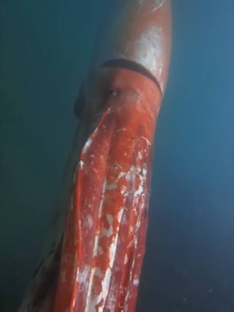
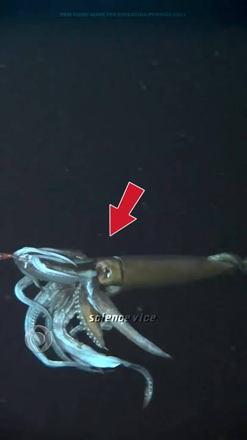
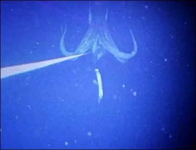

Habitat
Giant Squid (Architeuthis dux) are deep-sea squid that live all over the world in all major oceans and seas that are deep enough for them. They have been estimated to reach the size of 15 feet in the body alone (mantel), the tentacles grow to an outstanding length of 33 Feet. The deep ocean is what causes gigantism in giant squid.


